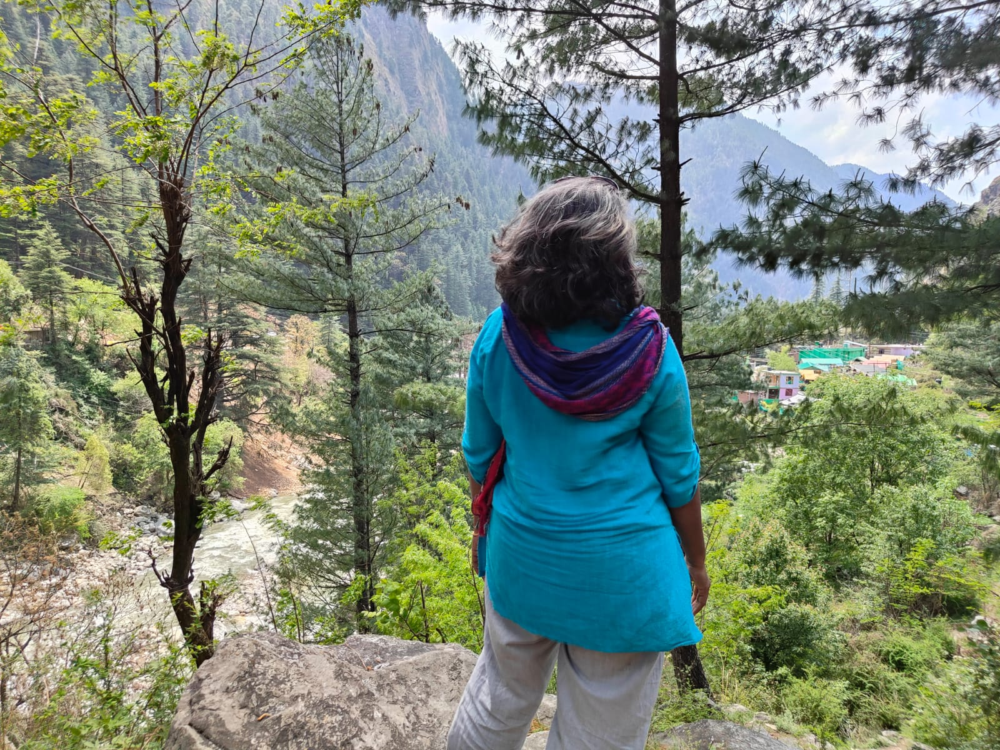

Individual coaching
Sometimes, one conversation is all it takes to begin.
Bring the thought, decision or situation you keep thinking about. You do not need to have the right words for it.
Begin with a conversation
and feel at peace.
What coaching offers
Not advice.
Not a ready answer.
A clearer view of your own.
A coaching conversation gives your experience room to unfold without being hurried towards a solution.
Together, we stay with what you are noticing, look beneath what is immediately visible and explore the choices that become possible when you can see the situation differently.
You remain at the centre. The direction grows from what matters to you.
What can I bring?
Whatever needs attention.
You do not need a clear goal to book a conversation. You just need to start with what is bothering you.
- A decision I cannot settle
- A pattern I keep repeating
- A relationship I want to understand
- A change I am trying to navigate
- Questions about work or purpose
- Confidence, boundaries or expression
- Something I cannot name yet
- I just feel overwhelmed overall
Why coaching, now?
AI can help you reflect.
Human support can help you go deeper.
Sometimes you need to say something while it is happening. An AI chatbot can be available in that moment—to hear your story, help you express it and prompt reflection.
When the reflection reveals a deeper pattern, difficult choice or something you cannot move through alone, a coach or professional can bring human context, skilled attention and continuity to the work.
Together, our in-house platform meCove and coaching with Shilpa offer continuity in the moment and deeper human understanding when you need it.
Shilpa's coaching approach
One conversation can move through many layers.
The movement is not always linear. We may return, pause or go deeper wherever your experience asks us to.
A way of working, not a formula to fit into.

In the room with you
Coaching with Shilpa.
Shilpa is a PCC credentialed coach with the International Coaching Federation, with a background in IT and over ten years of experience in corporate training and leadership development.
Her work in training, consulting and people development began in 2010. She started formal coach training in 2020, became a certified coach in 2021, and brings more than 700 hours of coaching experience across professionals, students and individuals from varied backgrounds. Her work has supported people through uncertainty, recurring patterns, important decisions, confidence, and life and career transitions.
Her approach brings together coaching, reflective listening, behavioural training and self-awareness practices. Clients often gain clarity, awareness of patterns and blind spots, confidence to make decisions, and the structure and accountability needed to create change.
Know more about Shilpa →From coaching clients
“I had a few sessions with Shilpa and these were real eye-openers for me. They helped me go deeper into my inner self, ask questions and find answers. Each solution is tailored to a specific individual—and it is the individual who knows the problem better than anyone else. Shilpa did a wonderful job of stimulating that inquisitiveness and kept checking whether we were moving on the right path.
Senior Manager, IT Company · US
“Now I am capable of expressing myself clearly, handling much more responsibility and getting the recognition I deserve.
Individual coaching client · Chennai
Before you decide
See if coaching feels right for you.
Begin with a free introductory session. Meet Shilpa, ask your questions and understand how coaching could support you before deciding.
Book a free sessionYou do not need a clear goal—or know where to start.
Begin with what is on your mind. The conversation can help you discover what needs attention.
What you share remains confidential.
Your conversations are treated with care and confidentiality. The boundaries and any necessary exceptions are explained clearly before coaching begins.
How long might coaching take?
One session may bring clarity to a focused concern. Deeper questions or recurring patterns may need a longer engagement. We agree on a starting rhythm and review together whether the work is helping you move forward.